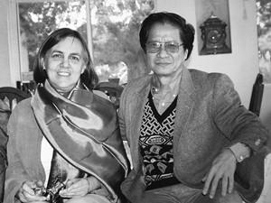
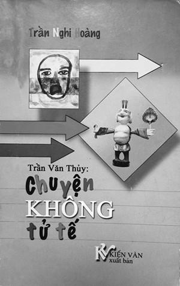

Trên đường về lại Westminter, tôi lại được thưởng thức cái hương vị “xe đò miền Tây Nam bộ”, nghe tiếng người mình, nghe hát cải lương, nghe mấy bà già kể tội con cái... Tôi thấy trong khi bán vé thu tiền hành khách, cậu phụ xe có vẻ lơ tôi đi. Tôi ngờ Đại học Berkeley hoặc Hoàng Khởi Phong đã mua vé trước cho tôi rồi...
☆
Nhân nói về cuốn sách “Nếu Đi Hết Biển”, về những bạn bè người Việt, người Mỹ, Trần Văn Thủy nhắc đến Deane Fox.
Thủy kể:
Chị Deane tự lái ô tô đưa tôi đi ngược bờ Tây nước Mỹ. Đây chỉ là một trong hàng trăm chuyến đi trong cuộc đời phiêu lãng của tôi nhưng là một kỉ niệm khó quên.
Trước đây và sau này tôi vẫn có ý thức quan sát. Muốn chiêm nghiệm và cảm nhận thì chẳng nên đi máy bay mà nên “bò sát mặt đất”. Thử nghĩ một người như tôi, đã từng nhận lời mời tới nói chuyện, chiếu phim không biết bao nhiêu buổi cho trên 30 trường đại học rải rác khắp nước Mỹ cho nên đã chán việc leo lên leo xuống thang máy bay như thế nào.
Trong câu chuyện, đã nhiều lần tôi nhắc đến Deane. Chị tìm ra tôi, biết tôi qua mạng. Chị là một nhà nhân chủng học, biết tiếng Việt và quan tâm đặc biệt đến hậu quả chất độc da cam ở Việt Nam. Chị sang Việt Nam nhiều lần, ở nhiều tháng, quen thân nhiều nhà nghiên cứu Việt Nam. Có lần chị về Thái Bình, nơi có nhiều nạn nhân da cam nhưng chị bị ngăn cản, vì hồi đó nông dân Thái Bình đang nổi loạn. Chị tìm phương cách cứu giúp những con người bất hạnh nhưng bị làm phiền.
Hồi đó chị cũng bỏ thì giờ dịch không công bản lời bình phim “Chuyện Từ Góc Công Viên” của chúng tôi để chiếu ở Mỹ và các nước khác. Rất may mắn và tình cờ sau đó bộ phim này được trình chiếu thành công trong hội thảo quan trọng về chất độc da cam ở Đại học Riverside California tháng 5-2009. Chị Deane và tôi đều có mặt trong cuộc hội thảo đó. Tôi còn nhớ và băng hình cũng có ghi khi chiếu phim xong đến phần thảo luận trao đổi, một thanh niên gốc Việt hăng hái bật dậy:
- Đây là một bộ phim tuyên truyền...
Tôi vui vẻ đáp lời:
- Vâng! Thưa anh, anh nói rất chính xác. Đây đích thị là một bộ phim tuyên truyền. Nhưng anh thử nghĩ giúp, ở trên đời này có việc gì đến bờ đến bến mà không nhờ tuyên truyền. Tuyên truyền nhiều nhất là ở nước Mỹ này, quảng cáo hàng hóa là tổ sư của tuyên truyền, tranh cử Tổng thống cũng là một dạng tuyên truyền. Vấn đề là ở chỗ tuyên truyền cho cái gì, chính hay tà, thiện hay ác mà thôi, anh ạ...
Cử tọa hầu hết là những nhà nghiên cứu, giáo sư các nhà báo và cựu chiến binh Mỹ cho nên họ dễ đồng cảm với tôi.
☆
Tôi nhớ một lần trước khi rời Việt Nam về Mỹ, chị Deane giao lại cho tôi số tiền giúp một cháu cơ nhỡ tiếp tục học sửa xe máy để nuôi thân. Chị dặn đừng đưa tất cả cho nó, nó tiêu hết mất.
Ở Hà Nội chị kết nghĩa với nhiều cháu cơ nhỡ như thế.
Trong phim ảnh, bờ Tây nước Mỹ hùng vĩ và huyền bí; trong tiểu thuyết đã nói đến quá nhiều nhưng chị Deane giảng cho tôi những điều kì thú về những cảnh quan lướt qua sau tấm kính xe. Hôm nay sóng biển như lớn hơn; bầu trời như cao hơn; vách đá cheo leo; rừng cây trùng điệp và xa lộ mười làn đường dài hun hút.
Tôi bất giác ngẫm nghĩ về cái duyên số của cuộc đời làm phim thăng trầm của mình, lên voi xuống chó đã đưa đẩy tôi được thấy những miền đất lạ, những miền đất luôn gắn liền với biển, với hồ, với nước với “thủy”, một trong ngũ hành, cái tên cha mẹ đặt cho mình.
Thời kỳ du học, tôi có dịp đi về tám lần qua hồ Baikal, hồ nước ngọt lớn nhất thế giới, một lần còn ở lại đó mấy tháng để làm phim.
Từ đỉnh đồi trên cảng Marseille, tôi được ngắm Địa Trung Hải; được thấy Biển Đen ở thành phố Sochi, thấy Baltic ở cảng Hambough, thấy Biển Bắc ở Saint Peterbough.
Tôi đã nhìn thấy biển từ mọi hướng: thấy bờ Đông Đại Tây Dương từ thành phố Nantes; thấy bờ Tây Đại Tây Dương từ chân tượng thần tự do, từ Masachusset, thấy bờ Đông Thái Bình Dương từ Los Angeles, San Francisco, thấy bờ Tây Thái Bình Dương từ Nhật Bản, thấy Nam Thái Bình Dương từ Sydney, Melbourne, thấy biển Caribe từ Florida, thấy biển Manche từ D’auville, thấy biển bao quanh nước Anh từ Manchester, từ Luân Đôn; thấy biển nước Ý từ Milano, Roma, Venise.
Tôi lại được chiêm ngưỡng Lake Tahoe, một cái hồ đẹp và huyền bí như trong truyện cổ tích, cái hồ nổi tiếng của nước Mỹ cao hơn mặt nước biển, nằm giữa hai tiểu bang Cali và Nevada...
Sự di chuyển và ngắm cảnh như thế đối với những người tài giỏi, quyền quí giàu sang là chuyện thường tình, nhưng với tôi một thằng chân đất mắt toét, vào đời sinh sống với những tộc người nguyên thủy ở trần ăn củ rừng thú rừng, một thằng suốt 10 năm từ 20 đến 30 tuổi chỉ có một nguyện vong cao xa nhất là được ăn no, được đi bộ trên đường bằng phẳng thì quả như một giấc mơ giữa đời thực. Một đời nhiều phen thân tàn ma dại, cận kề cái chết... quả là tôi chưa bao giờ lại nghĩ rằng được thấy trời cao đất rộng như thế này.
Mặt khác những chuyến đi đó rất có ích đối với một người làm phim tài liệu như tôi.
Tới tiểu bang Posland thì trời tối, chúng tôi ở lại 2 ngày. Sáng sáng tôi đi bộ thể dục quanh vùng và nhận ra rằng biệt thự của Deane và của những nhà xung quanh đều nằm trong rừng cây. Như dự định, 2 ngày đó chị đưa tôi đi nói chuyện, chiếu phim, giao lưu với 2 trường đại học ở đó. Ngày hôm sau chúng tôi tiếp tục cuộc hành trình tới Seattle, tiểu bang Washington ở Tây Bắc nước Mỹ, sát Canada.
Đại học Seattle là nơi chị làm việc và là nơi mời tôi cùng Wayne Karlin, Trương Vũ tới thuyết trình. Ở đây có nhiều sự việc thú vị đã xảy ra:
- Tôi được quen biết cô Rosemary, nói tiếng Việt như người Việt, có tên Việt là Thảo. Chồng cô là người gốc Việt tên Hiếu. Rosemary làm những người Việt Nam chúng tôi ngạc nhiên vì sự am tường sâu sắc tiếng Việt và Văn hóa Việt. Khi tôi được bạn bè giúp xuất bản cuốn “Nếu Đi Hết Biển” thì cô đã từng cùng Thái Tuyết Quân, Deane Fox chuyển ngữ bài của Wayne Karlin mà không hề kể công.
- Trưởng khoa Đông Nam Á của Đại học Seattle lại là một người Đức, nói tiếng Việt thành thạo và biết nhiều chuyện tào lao hài hước của Việt Nam.
- Tôi nói chuyện ở đại học Seattle 3 buổi, trong đó có một buổi cùng với Wayne Karlin và Trương Vũ. Theo tôi, buổi đó đã gây ấn tượng đặc biệt với các giáo sư, sinh viên và cựu binh Mỹ.
Công việc của tôi cùng chị Deane ở Đại học Seattle và ở Bờ Tây kết thúc. Chúng tôi chia tay nhau trong sự lưu luyến. Chị tới khách sạn, nơi tôi ở, tặng tôi một cuốn sách quý, rất to, in màu rất đẹp về lịch sử và kiến trúc của trường Đại học Seattle và đưa tôi ra phi trường bay về Bờ Đông, về Boston, nhà bạn tôi, nơi tôi ở nhiều nhất mỗi khi tôi đến Mỹ làm việc.
Nhưng câu chuyện, có thể là câu chuyện cảm động nhất, bất ngờ nhất trong chuyến đi Seattle là câu chuyện nhỏ sau đây.
Sau buổi nói chuyện ở trường Đại học Seattle, rất nhiều cử tọa còn nán lại để giao lưu chuyện trò với tác giả. Trong khi đó vợ chồng Thanh - Kiệt chờ đợi để mời bằng được tôi đến chơi nhà và tôi đã được đón tiếp rất thân tình.
☆
Căn phòng gọn gàng trang nhã. Tôi đưa mắt nhìn quanh, (một việc có vẻ bình thường ở ta, nhưng không mấy lịch sự ở phương Tây) thấy trên tường có một cái ảnh lồng khung kính trang trọng, một bà già tóc bạc đoan trang phúc hậu, ngồi chính giữa, đứng phía sau là 5 chàng thanh niên mặc com lê đen đeo kính trắng, mặt giống nhau, trẻ như nhau chẳng biết ai là anh ai là em, Kiệt là một trong số đó.
Tôi hỏi Kiệt:
- Thế bố cháu đâu?
Kiệt chỉ vào cái ảnh đen trắng nhỏ, cũ kĩ treo bên cạnh.
- Bố cháu đây ạ!
- Thế ông đâu? Ông còn khỏe không?
- Bố cháu mất rồi ạ.
- Ô, xin lỗi. Ông mất ở đâu? (Lại câu hỏi kiểu... An Nam).
Kiệt ngập ngừng vài giây:
- Dạ, bố cháu mất trong trại cải tạo!
Tôi sững người! Gia đình người con trai có bố chết trong nhà tù cộng sản lại thân thiện như thế với một người phía cộng sản!
Kiệt bảo:
- Hôm nay chúng cháu hân hạnh được chú Thủy nhận lời mời của chúng cháu đến thăm. Lát nữa xin phép chú, cháu đưa Thanh đi sinh. Mở hai phân rồi chú ạ!
☆
...Xấu hổ quá tôi chẳng hiểu “mở hai phân” là thế nào, nhưng trời thương, không cho tôi hỏi tiếp như mấy câu trước.
Ôi chao, vợ sắp sinh rồi mà hai vợ chồng mời bằng được tôi đến chơi nhà!
Sau khi trở về Boston, hai ngày sau đó tôi nhận được mail của Thanh Kiệt kể rằng đã sinh cháu trai, cháu dài bằng này, nặng bằng này và đưa ra ba cái tên nhờ tôi chọn để đặt cho cháu!
Tôi vô cùng xúc động, tại sao cuộc đời lại đưa đẩy tôi đến những tình huống lạ lùng ngoài sức tưởng tượng đến thế. Cái mặc cảm một thằng Việt cộng trong mình có nguôi ngoai đi chăng?
Phải chăng chị Deane đã để tâm thiết kế chuyến viếng thăm giao lưu của tôi với mấy Đại học bờ Tây bởi chị muốn làm cây cầu hòa giải Việt - Mỹ? Nhưng chắc chắn chị không biết rằng có những khán giả người Việt như vợ chồng Lý Kiệt - Thanh Xuân đã mời tôi về nhà bày tỏ thịnh tình và lòng quý mến hiếm thấy như thế.
Đấy là sự hòa giải, một sự hòa giải khó khăn hơn nhiều so với sự hòa giải giữa người Việt với người Mỹ.
☆

Phải chăng chị Deane đã để tâm thiết kế chuyến viếng thăm giao lưu của tôi với mấy Đại học bờ Tây bởi chị muốn làm cây cầu hòa giải Việt - Mỹ?
☆
...Chuyện vợ chồng Lý Kiệt - Thanh Xuân ám ảnh tôi rất lâu. Bởi lẽ, người trong nước sang đây không phải lúc nào và ở đâu cũng được sự cảm thông như thế. Có lần ở châu Âu năm 1989 người ta gọi tôi là “thằng văn nô”; ở Mỹ có hai lần tôi tới đại học nọ để chiếu phim và nói chuyện thì bị đe dọa, họ gọi tôi là “Tên du kích văn hóa cộng sản ”. Có lúc tôi thấy chán nản và khổ tâm về sự chia cắt từ lãnh thổ đến những cái ý thức hệ gì gì đó. Có lần giữa những người thân và sơ phản bác tôi, không giữ được bình tĩnh, tôi nói toẹt cái lý sự cùn của tôi ra: Các ông đừng trách chúng tôi, đừng trách cái xã hội Việt Nam bây giờ đâu đó còn những chuyện tồi tệ thế này thế khác. Nó tệ vì nhiều lẽ, nhiều lí do nhưng cái lí do đầu tiên là tại... các ông! Các ông thua, các ông bỏ chạy, các ông để lại cả một giang sơn gấm vóc cho ‘Việt cộng’ nó giày vò. Mỹ nó bơm cho các ông nhiều như thế, các ông lại tuyên bố: ‘ Viện trợ 700 triệu đánh kiểu 700 triệu; viện trợ 300 triệu đánh kiểu 300 triệu’...” Về sau có tin đồn rằng tôi không phải là nghệ sĩ, không phải là đạo diễn phim phiếc gì cả mà tôi là một cán bộ tuyên huấn tuyên truyền. Vậy mà, tôi lại phải lo đỡ đòn khi về nước! Khổ cho cái thân tôi.
Trong bối cảnh đó cũng có không ít trường hợp tôi được cảm thông động viên của nhiều người. Đó là các các trí thức thịnh tình mở rộng cửa đón tiếp tôi, các anh chị đã cùng tôi làm cuốn sách “Nếu Đi Hết Biển”, đã đưa tôi đi đây đó thăm thú nước Mỹ, thăm Disneyland, Las Vegas, Hollywood, Vịnh San Francisco, thăm Cảng New York, các danh thắng ở Washington. Nhiều anh chị và gia đình đã đón tiếp tôi cả tuần khi tôi có việc tới tiểu bang của họ. Các anh chị đã thân ái với tôi, một người từ trong nước qua, một người “nhà quê ra tỉnh” khiến tôi hết sức cảm động.
☆
Có một chuyện, tôi cứ phân vân mãi có nên kể lại hay không, vì viết ra có thể gây phiền hà cho những người đã cư xử tốt với tôi. Có thể tình hình bây giờ đã khác, đã dễ chịu hơn vậy nên chăng xin thể tất cho tôi được kể.
Đầu năm 2003 Đại học Berkeley mời tôi đến chiếu phim và nói chuyện. Lúc bấy giờ tôi đang ở nhà của nhà văn Hoàng Khởi Phong tại Westminter. Hôm đó anh đưa tôi ra bến xe đò Hoàng ở trước nhà hàng Phước Lộc Thọ để đi San José, nơi có trường Đại học Berkeley. Cái xe đò Hoàng này thật hay, hành khách toàn là người Việt, nói tiếng Việt, các bà ăn trầu, kể chuyện gia đình con cái. Dọc đường, trên xe toàn chiếu băng cải lương, lái xe phụ xe nhanh thoăn thoắt, la lối y hệt những cái xe miền Tây Nam bộ.
Thì đây cũng là miền Tây mà, chỉ khác là miền Tây nước Mỹ. Xe khởi hành lúc 9h45, phụ xe phát cho mỗi người một ổ bánh mì kẹp thịt, một chai nước, một đĩa thạch. Đến San Jose lúc 16h15.
Tôi thấy người phụ xe (không biết là phụ xe hay người nhà ông chủ) quán xuyến mọi việc, kể cả việc đón tiếp hành khách, bán vé thu tiền. Vì lạ lẫm và không muốn phiền ai biết tôi là “Việt cộng”, tôi ngồi sát bên cửa sổ để ngắm cảnh, không bắt chuyện với ai. Người phụ xe qua lại trước mặt tôi cả mấy chục lượt nhưng không bán vé cho tôi và cũng chẳng hỏi tôi điều gì. Xế chiều xe gần đến San Jose, tôi nói với anh ta:
- Anh làm ơn cho tôi mua vé!
- Khỏi cần, chú còn chuyến về nữa kia mà, vội gì. Chúc chú đi công chuyện dzui dzẻ. Khi về đi xe cháu nhé!
Nói rồi anh chàng này mất hút.
Tôi có người đón, chị Thấm Vân được Đại học Berkeley nhờ đón tôi. Sau mấy ngày lên lớp, nói chuyện bô lô ba la, chiếu phim, ngao du Cầu Vàng Vịnh San Francisco, tôi được chị đưa ra bến xe đò Hoàng.
Trên đường về lại Westminter, tôi lại được thưởng thức cái hương vị “xe đò miền Tây Nam bộ”, nghe tiếng người mình, nghe hát cải lương, nghe mấy bà già kể tội con cái... Tôi thấy trong khi bán vé thu tiền hành khách, cậu phụ xe có vẻ lơ tôi đi. Tôi ngờ Đại học Berkeley hoặc Hoàng Khởi Phong đã mua vé trước cho tôi rồi.
Xế chiều, gần tới nơi, tôi nói với cậu phụ xe cho tôi gửi tiền xe khứ hồi. Cậu ta nhìn thẳng vào mắt tôi với nụ cười thân thiện mà tôi còn nhớ mãi:
- Chú à! Chú là chú Thủy, Trần Văn Thủy đúng không? Cháu nhận ra chú ngay từ lúc ông Hoàng Khởi Phong tiễn chú ra xe. Chú cho chúng cháu có được niềm vui là đãi chú chuyến đi này. Cháu vui lắm chú biết không? Chẳng ngờ quả đất tròn, trời cho cháu được gặp chú một lần. Chú nhìn xem, xe cháu rộng mênh mông còn thừa nhiều chỗ thế này, chú đi hay không đi thì vẫn dư chỗ ngồi.
Rồi cậu ta hăng hái kể, lúc rời Việt Nam (không hiểu theo diện HO hay vượt biên) cậu ta nhét hai cái đĩa DVD phim “Hà Nội Trong Mắt Ai” và “Chuyện Tử Tế” vào quần trong để mang qua Mỹ. Ở đó cậu ta in ra hàng trăm bản, phân phát cho mọi người...
Tôi ứa nước mắt. Tôi nói với cậu ta rằng, tiền xe đi về là Đại học Berkeley trả, cháu không lấy thì chú cũng không được dùng. Nếu cháu biết chú Hoàng Khởi Phong rồi thì chúng ta còn gặp lại nhau.
Tôi nói thế nào cậu ấy cũng không nhận tiền. Về nhà Hoàng Khởi Phong, tôi kể lại câu chuyện, anh cười ha hả. Rồi sau này anh cho biết nhiều anh chị đã góp tiền in “Nếu Đi Hết Biển”. Bạn bè thân thiết chẳng kể làm gì, nhưng trong đó có “Xe đò Hoàng”. Không biết ông chủ hay cậu phụ xe dạo trước đã đem đến một số tiền, đưa cho Hoàng Khởi Phong, nói là để in sách và phim của chú Thủy. Cậu ta dặn Hoàng Khởi Phong là đừng nói với ai vì sợ bị tẩy chay do thân Việt cộng!
☆

Bìa cuốn sách “Trần Văn Thủy: Chuyện Không Tử Tế” (Kiến Văn xuất bản. Virgina - Hoa Kỳ. Oct. 2004)
Cậu ta lo xa thế không phải vô cớ...
Trong cuốn sách “ Trần Văn Thủy: Chuyện Không Tử Tế ” (Kiến Văn xuất bản. Virgina - Hoa Kỳ. Oct. 2004) có những dòng sau đây:
Trang 12: “Đảng có công tài bồi cho Trần Văn Thủy thành một hiện tượng như vậy. Đừng bảo tôi đa nghi! Hãy làm ơn đơn cử ra cho tôi một con người ‘can đảm’ ‘dám nói sự thật’ dưới chế độ Việt cộng mà không bị một sự trừng trị răn đe nào (thực sự) áp đặt lên con người đó...”
Trang 32: “...Rõ ràng Trần Văn Thủy luôn luôn mang trong đầu cái tâm thức của một ‘thằng Việt cộng’”.
Trang 52: “...Trần Văn Thủy là ai? Một người ham vui? Một kẻ ham địa vị? Tôi chỉ biết chắc chắn Trần Văn Thủy là một cán bộ văn hóa của nhà nước và đảng Việt cộng đang thi hành công tác...”
Ôi, người Việt Nam tội nghiệp, ở đâu cũng thế, ở đâu cũng có những người thích biểu diễn lập trường, coi việc oánh nhau, diệt nhau quan trọng hơn tất cả...
☆